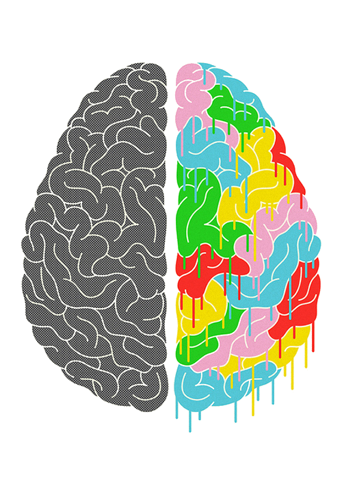

thanks for stoping by ! -Jeannie

Computing and Its Specific Social Effects On The Coming Generation
↡examples of these instances ↡
LGBTQ+ awareness: by using hashtags and starting online campaigns on platforms such as facebook, instagram, and youtube, activists were able to bring awareness to teenagers on the topic of LGBTQ+ issues and stories. Campaigns such as "It Gets Better", "Human Rights", and "#ComingOutMatters" use these platforms to educate and support the LGBTQ+ community and allies. Due to many schools not providing enough medically-accurate, age-appropriate health and sexuality information, LGBTQ+ youth turn to seek out the information online on their own.
Gen Z is the most educated generation and accustomed to technology than any other. 85% of gen Z uses social media to learn about products and news. Almost half of Gen Z is connected online for more than 10 hours a day. The people in this generation take full advantage of the internet and technology that has been given to them, and they use it in which they make blogs and accounts through multiple social media platforms to express their feelings and opinions. By Gen Z being the main users of these platforms, the opinions of these people are posted and attract the attention of others-- this causes/caused multiple movements to take place or become more publicised
Political Awareness: As the Washington Post had stated in their story covering teenagers' viewpoint on political issues due to being exposed to social media, 'we’ve found that young people who are involved in online communities become more engaged in politics. " As a teen, I get most of my news from accounts focusing on educating the community. These accounts give you all the details about a certain event and different viewpoints, therefore allowing you to decide who to side with.

As I scroll through social media, I see advertisments for petitions to stop or start projects for the common good. Websites like Change.org have succeeded in many cases due to having internet users sign petitions like freeing a British-Iranian woman from jail, or keeping a woman on bank notes.